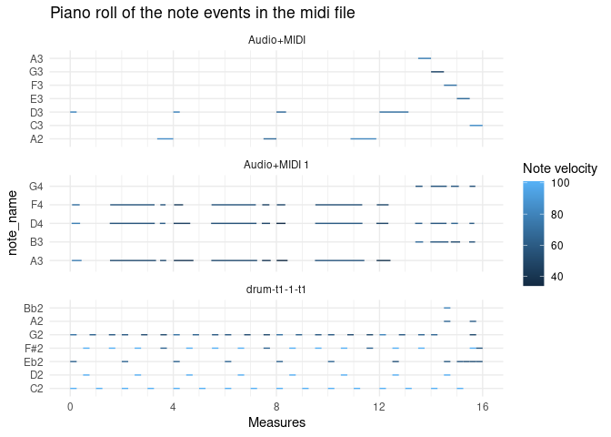

The goal of pyramidi is to read in dataframes generated by the python package miditapyr. These dataframes contain midi data. Then the midi information (one line per event) can be translated into a wide format (one line per note). This facilitates plotting piano roll plots. These dataframes can then be written back to midi files (again using miditapyr).
You can install pyramidi from github with:
## install remotes package if it's not already if (!requireNamespace("remotes", quietly = TRUE)) { install.packages("remotes") } ## install dev version of rtweettree from github remotes::install_github("UrsWilke/pyramidi")
The python package miditapyr also needs to be installed via
in your virtual environment.
mid_file <- system.file("extdata", "test_midi_file.mid", package = "pyramidi") mido$MidiFile(mid_file) %>% mt$mido_midi_df() %->% c(df_meta, df_notes, ticks_per_beat)
df_meta #> type name time tempo numerator denominator #> 0 track_name Drum Machine 0 NaN NaN NaN #> 3 set_tempo nan 0 545454 NaN NaN #> 4 time_signature nan 0 NaN 4 4 #> 2151 end_of_track nan 241 NaN NaN NaN #> 2152 track_name FM-4 0 NaN NaN NaN #> 2435 end_of_track nan 1954 NaN NaN NaN #> 2436 track_name FM-4 0 NaN NaN NaN #> 4969 end_of_track nan 202 NaN NaN NaN #> clocks_per_click notated_32nd_notes_per_beat i_track #> 0 NaN NaN 1 #> 3 NaN NaN 1 #> 4 24 8 1 #> 2151 NaN NaN 1 #> 2152 NaN NaN 2 #> 2435 NaN NaN 2 #> 2436 NaN NaN 3 #> 4969 NaN NaN 3
df_notes %>% as_tibble() #> # A tibble: 4,962 x 7 #> type name time note velocity channel i_track #> <chr> <chr> <dbl> <dbl> <dbl> <dbl> <dbl> #> 1 note_on nan 0 38 101 9 1 #> 2 note_on nan 0 36 101 9 1 #> 3 note_off nan 240 38 101 9 1 #> 4 note_off nan 0 36 101 9 1 #> 5 note_on nan 1200 38 101 9 1 #> 6 note_off nan 240 38 101 9 1 #> 7 note_on nan 240 38 101 9 1 #> 8 note_on nan 0 36 101 9 1 #> 9 note_off nan 240 38 101 9 1 #> 10 note_off nan 0 36 101 9 1 #> # … with 4,952 more rows
ticks_per_beat #> [1] 960
df_notes_wide <- tab_measures(df_meta, df_notes, ticks_per_beat) %>% widen_events() %>% left_join(pyramidi::midi_defs) #> Joining, by = "note" df_notes_wide #> # A tibble: 2,481 x 18 #> i_track name channel note i_note m_note_on m_note_off b_note_on b_note_off #> <dbl> <chr> <dbl> <dbl> <int> <dbl> <dbl> <dbl> <dbl> #> 1 1 nan 9 38 1 0 0.25 0 1 #> 2 1 nan 9 36 1 0 0.25 0 1 #> 3 1 nan 9 38 2 1.5 1.75 6 7. #> 4 1 nan 9 38 3 2 2.25 8 9 #> 5 1 nan 9 36 2 2 2.25 8 9 #> 6 1 nan 9 38 4 3.5 3.75 14. 15 #> 7 1 nan 9 38 5 4 4.25 16 17. #> 8 1 nan 9 36 3 4 4.25 16 17. #> 9 1 nan 9 38 6 5.5 5.75 22 23. #> 10 1 nan 9 38 7 6 6.25 24 25 #> # … with 2,471 more rows, and 9 more variables: t_note_on <dbl>, #> # t_note_off <dbl>, ticks_note_on <dbl>, ticks_note_off <dbl>, #> # time_note_on <dbl>, time_note_off <dbl>, velocity_note_on <dbl>, #> # velocity_note_off <dbl>, note_name <fct>
p1 <- df_notes_wide %>% ggplot() + geom_segment( aes( x = m_note_on, y = note_name, xend = m_note_off, yend = note_name, color = velocity_note_on ) ) + # each midi track is printed into its own facet: facet_wrap( ~ i_track, ncol = 1, scales = "free_y") p1

df_notes_out <- df_notes_wide %>% select(c("i_track", "name", "channel", "note", "i_note"), matches("_note_o[nf]f?$")) %>% pivot_longer(matches("_note_o[nf]f?$"), names_to = c(".value", "type"), names_pattern = "(.+?)_(.*)") %>% arrange(i_track, t) df_notes_out <- df_notes_out %>% group_by(i_track) %>% mutate(time = ticks - lag(ticks) %>% {.[1] = 0; .}) %>% ungroup() df_notes_out #> # A tibble: 4,962 x 12 #> i_track name channel note i_note type m b t ticks time #> <dbl> <chr> <dbl> <dbl> <int> <chr> <dbl> <dbl> <dbl> <dbl> <dbl> #> 1 1 nan 9 38 1 note… 0 0 0 0 0 #> 2 1 nan 9 36 1 note… 0 0 0 0 0 #> 3 1 nan 9 38 1 note… 0.25 1 0.136 240 240 #> 4 1 nan 9 36 1 note… 0.25 1 0.136 240 0 #> 5 1 nan 9 38 2 note… 1.5 6 0.818 1440 1200 #> 6 1 nan 9 38 2 note… 1.75 7. 0.955 1680 240 #> 7 1 nan 9 38 3 note… 2 8 1.09 1920 240 #> 8 1 nan 9 36 2 note… 2 8 1.09 1920 0 #> 9 1 nan 9 38 3 note… 2.25 9 1.23 2160 240 #> 10 1 nan 9 36 2 note… 2.25 9 1.23 2160 0 #> # … with 4,952 more rows, and 1 more variable: velocity <dbl>
mt$df_2_midi(df_meta %>% mutate(time = as.integer(time)), df_notes_out, ticks_per_beat, "test.mid")